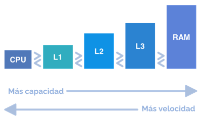
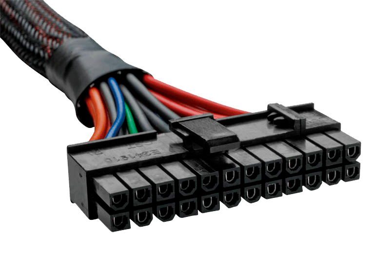
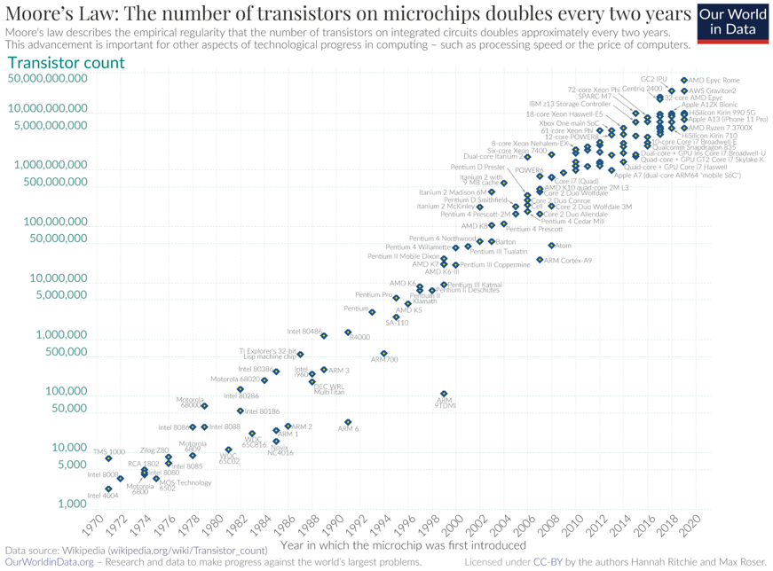
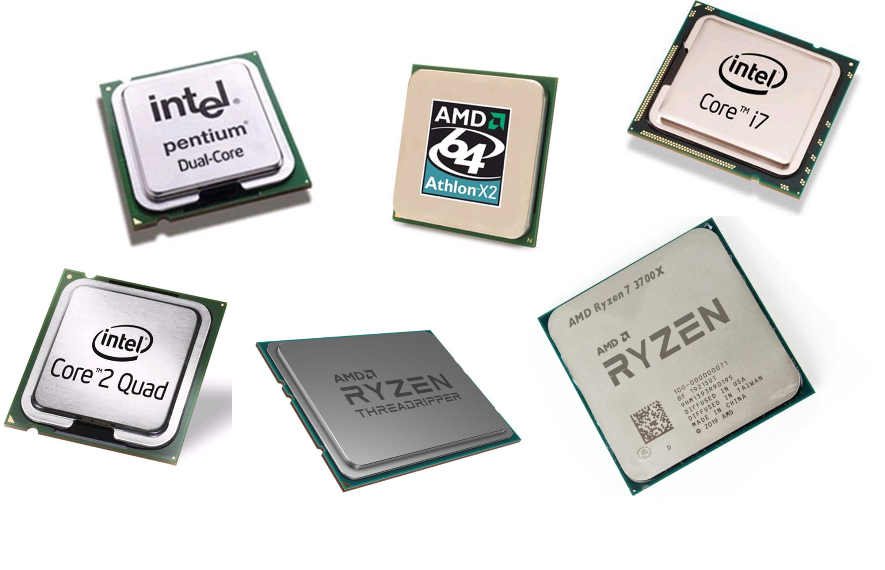

Velocidad del procesador
-
Se expresa en hercios (Hz).
- 1 Hz = 1 ciclo de reloj por segundo
- 1 MHz = 106 Hz (1 millón de hercios)
- 1 GHz = 109 Hz (1.000 millones de hercios)
-
Velocidad. Se definen dos velocidades:
- Velocidad interna
- Velocidad externa, bus del sistema o FSB (modelo clásico)
Velocidad interna = Velocidad externa x Multiplicador
Memoria caché
- Memoria intermedia entre la memoria principal y el procesador.
- Memoria más rápida que la memoria principal, pero de menor tamaño.
- Almacena copia de los datos más utilizados.
- Permite reducir el tiempo medio de acceso a los datos.
- Puede separarse en caché de datos o instrucciones.
- En procesadores de varios núcleos puede ser exclusiva de cada núcleo o compartida.

Alimentación
- El micro recibe alimentación de la placa base.
- Dos tipos de voltaje:
- Externo o de E/S
- Interno o de núcleo
- En las placas antiguas se podía configurar el voltaje suministrado al procesador.
- Los procesadores actuales permiten que la placa determine el voltaje adecuado.

Repertorios de instrucciones
Conjunto de instrucciones para aplicaciones multimedia y 3D.
- MMX (Pentium) y 3DNow! (AMD K6)
- En una única instrucción operaciones con varios datos.
- Permite hasta 4 operaciones en coma flotante por ciclo de reloj.
- SSE o MMX-2(Pentium III)
- 70 instrucciones más (acceso a memoria, mpeg-2, reconocimiento de voz, etc.)
- Uso de forma simultánea con la FPU.
- SSE2 (Pentium IV)
- 144 instrucciones para cálculos de doble precisión (128 bits)
- SSE3 (Prescott)
- Instrucciones para el manejo de hilos (threads).
- SSE3 (Intel Core 2 Duo y Xeon)
- 32 instrucciones para mejorar la velocidad de ejecución.
- SSE4 (Intel Core2 e Intel Core 1st gen)
- 47 instrucciones instrucciones en Intel Core2 (SSE4.1)
- 7 instrucciones adicionales en Intel Core 1st gen (SSE 4.2)
- AVX (Intel Core 2nd gen) y AVX2 (Intel Core 4th gen)
- Instrucciones de 256 bits para uso intensivo de punto flotante
- AVX-512 (Intel Core 7th gen)
- Procesa el doble de elementos que AVX y AVX2 en una sola instrucción
TDP
- Son las iniciales de Thermal Design Power
- Aunque se mide en vatios (W) no hace referencia al consumo del procesador, sino al calor que desprende
- Indica la cantidad máxima de calor que se espera que un componente produzca en un escenario de uso intenso
- Aunque el TDP no mide el consumo eléctrico del procesador, sí está relacionado directamente con este
- El TDP puede ser una medida que ayude a elegir la refrigeración adecuada para un procesador
- Algunos procesadores pueden, en situaciones de buena refrigeración, exceder su TDP nominal e incrementar su rendimiento
Tecnología
- El elemento básico que componen un microprocesador es el transistor.
- En un microprocesador actual hay millones de transistores.
- El tamaño de los transistores se ha ido reduciendo.
- En la actualidad del orden de nanómetros (nm)
- 1 nm = 10^-9
- En poco tiempo cambiaremos a la siguiente unidad de medida, el Ángstrom (Å)
- 1 Å = 10-10 m = 0,1 nm
Ley de Moore
- Promulgada en 1965 por Gordon Moore (cofundador de Intel)
- Redefinida por él mismo en 1975
- Esta ley empírica establece que el número de transistores por unidad de superficie en los procesadores se duplica aproximadamente cada dos años.
- La consecuencia directa de la ley de Moore es que los precios de los - procesadores bajan al mismo tiempo que las prestaciones suben
- No se trata de una ley en el sentido científico de la palabra, sino de una observación empírica que se viene cumpliendo desde la década de los años

Número de núcleos
Número de núcleos integrados en un solo chip y funcionando en paralelo.
